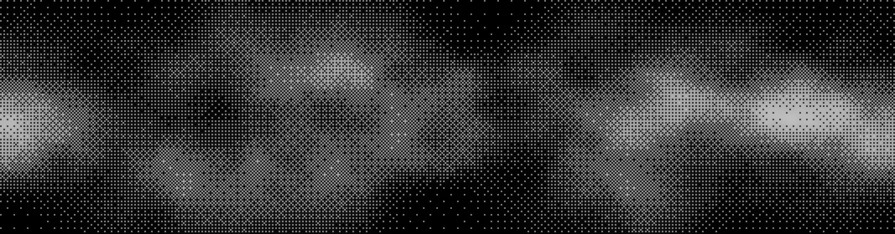
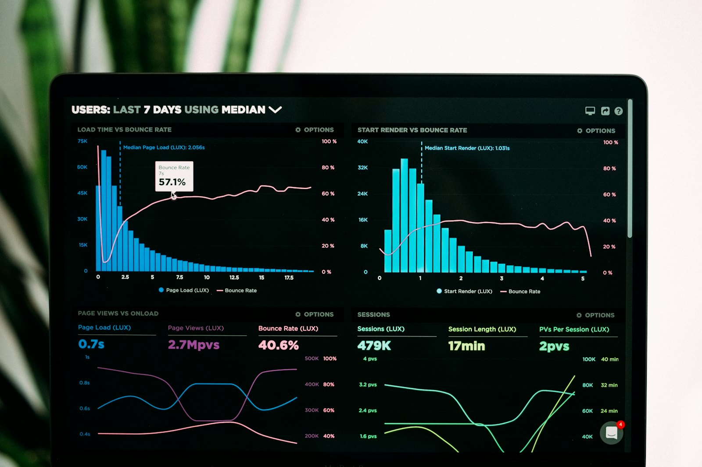
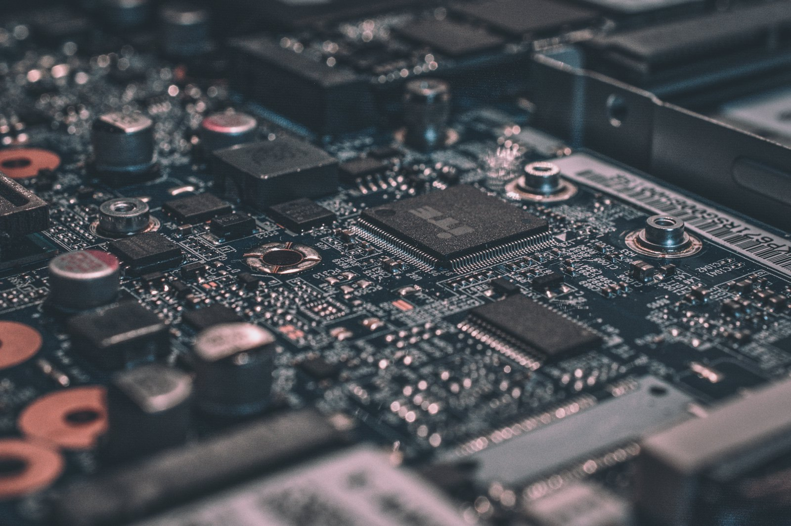

#01 · AI
Agents & applied AI
Conversational agents, retrieval pipelines and LLM integrations running in production to automate lookups and support decisions.
Kaspian
Rowe
Bergen
Vestland, Norway
Systems & AI Engineer
Software • AI • Cloud • Web
Local time
00:00
I build internal software, AI copilots and automations that give teams their hours back, from first sketch to cloud deploy. And I fuss over their interfaces as much as their code.
Full-Stack Developer & AI Engineer — 2026
Scroll
Software, AI and cloud working for real-world operations.
Systems engineer at Halvorsen Marine, I design and ship software end to end: internal platforms, dockside apps, AI copilots and automations. Design is still how I think: an internal tool deserves the same care as an award-winning website.
My work spans modern web development, cloud infrastructure, applied artificial intelligence and process automation. I build applications, wire systems together, run cloud environments and tune infrastructure. Day to day I write React, Next.js, TypeScript, Python and Node.js, inside Microsoft Business Central, Power Platform, Azure, Cloudflare and Hetzner environments.
Curious by default, I keep coming back to AI agents, machine learning and data analysis, process automation, SaaS products, cloud architecture and DevOps, plus observability and performance. Through Northloop Studio, I also build custom web projects, online stores and AI integrations for teams that want to move faster.
[ Journey ] · Pacific → Fjord
0KM
Journey from Valparaíso to Bergen: 12,495 km as the crow flies.
Born on the Pacific coast of Chile, now settled between the fjords of western Norway. Two ends of the planet, one habit: building useful tools and experiences people remember.
Stack · 58
Areas of Expertise
Path
Halvorsen Marine
Driving the digital side of a family-run ship chandler. Designing custom internal applications, automating data flows (catalogues, suppliers, reporting), shipping AI copilots, building on Power Platform, setting up monitoring and alerting, and tuning infrastructure.
Northloop Studio
Owning web projects from design to integration. Building fast showcase sites and online stores with a focus on ergonomics, fluidity and speed, and helping small companies through their digital shift.
Fjordline Institute
Full redesign of the institute's website as the sole developer. Ran the whole cycle: Figma design, Next.js/React front-end, headless WordPress back-end (ACF, WPGraphQL), content migration and server deployment.
2026
Azure AI Engineer Associate (AI-102)
Microsoft
Azure AI services, agents and responsible AI
2026
Building Systems with the ChatGPT API
DeepLearning.AI × OpenAI
LLM chaining, evaluation, prompt design
2025 - 2026
Machine Learning Specialization
Stanford Online × Coursera
Supervised learning, data analysis, Python
2021 - 2025
B.Sc. Interaction Design & Development
Universidad Técnica F. Santa María
Front-end development, UX/UI
2024
Professional Front-End Certificate (React)
Meta × Coursera
React, JSX, ES6, state, hooks
2023
Game Design Fundamentals
CalArts × Coursera
Level design and interactive systems
Results
Internal software, applied AI, connected hardware and a few websites: a selection designed, built and shipped end to end.
Scroll →

Systems engineer in a four-person IT team: I design and build the internal software, applied AI and dockside tools of a Norwegian ship chandler with three depots.

A hand-soldered sensor board (RP2040, e-ink, LoRa) that reports line tension and water level from the pier, plus a web dashboard and a watch tile to keep an eye on it.
SaaS application for ideas, notes, tasks and projects, with a modern full-stack architecture, hardened security and granular sharing. A collaborative tool in the spirit of Notion and Linear.

Full redesign and merger of two WordPress sites into a headless Next.js platform. Structured migration of 10+ content types, a three-layer cache (~50 ms), advanced SEO and a handover plan for the client team.
12 components dissected · 04 experiments
I'm always open to new projects and collaborations. Say hello — I usually answer within a day.
A question about my work? Ask my assistant.